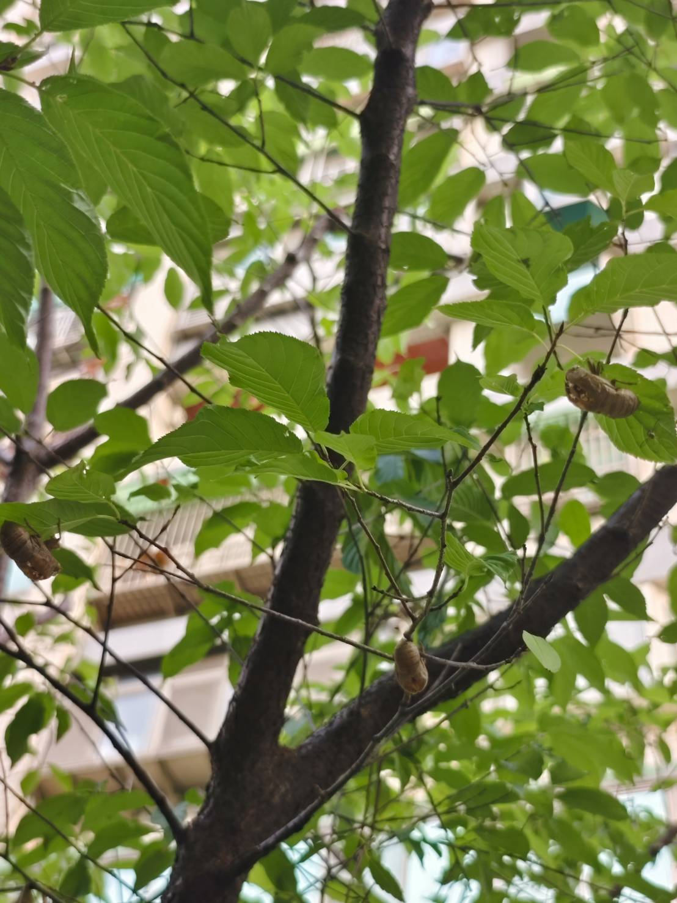

炎炎夏日
大聲鳴放的夏蟬
是否早已聽不見
而忘記了
蟬聲追追追
蟬百科
每到夏季，從城市行道樹到山林步道，一陣陣高亢的蟬鳴便成了盛夏最具代表性的聲音。這些聲音來自蟬，一種外表並不起眼、卻擁有強大鳴叫能力的昆蟲。蟬廣泛分布於溫帶與熱帶地區，是地球上歷史悠久的昆蟲之一。在台灣，已記錄的蟬類約有六十種，其中近六成為台灣特有，是夏日最常見的節肢動物之一。
蟬的一生多數時間潛伏於地底，歷經數年才終於破土而出。短短數週的成蟲期，是牠們唯一能夠飛翔、鳴叫與繁殖的階段。在這段短暫而熱烈的夏日生命裡，蟬不只是聲音的製造者，也是生態系中的重要角色。當牠們從地下羽化，會將累積多年的氮元素帶上地面，促進土壤養分的循環，間接維繫著植物的健康。同時，大量出現的蟬成蟲也成為鳥類、蜘蛛與其他昆蟲的重要食物來源，支撐著夏季食物鏈的穩定運作。
蟬為什麼會叫？
什麼時候會叫？──出現的時節
蟬的鳴叫主要出現在夏季，是因為牠們的成蟲通常在氣溫升高（25℃以上）、濕度偏高（60%以上）的時候才會活動。在台灣， 4 到 9 月是蟬鳴最頻繁的季節，高砂熊蟬等物種甚至能延續到 10 月。

什麼時間叫？──依物種區分的鳴叫時段
不同的蟬會選擇一天中不同的時段鳴叫。這樣的時間分化有助於物種之間避免彼此干擾，也反映出牠們各自的生理節奏。根據鳴叫時間，可將蟬大致分為三種類型：
每種蟬在特定時段鳴叫，可以減少聲音重疊與資源競爭，讓多種蟬得以在同一棵樹、同一片林地中共存。然而，近年來受到氣候變遷、環境污染、都市擴張以及天敵改變等多重因素影響，蟬的鳴叫時間出現異常現象。
為什麼會叫？──鳴叫的目的
蟬的鳴叫是雄蟬的求偶行為。牠們用叫聲吸引雌蟬靠近，聲音強弱與節奏變化都是「展示自我」的一種方式。不同物種的叫聲節奏、音高與長度各異，這不僅是繁殖訊號，也是雌蟬辨認同種對象的依據。當多隻雄蟬聚集時，牠們甚至會彼此「唱和」或「對抗」，這是一種聲音上的競爭行為，有時會形成整片林地的共鳴景象。
怎麼會叫？──發聲的構造原理
蟬的聲音不是從嘴巴發出，而是來自腹部的「鳴器」（tymbal）。這是一對彈性膜片，能快速振動。每一次振動會發出「啪」的聲響，當鳴器以高速規律震動時，就會產生連續的鳴叫聲。蟬的體腔會產生共鳴，進一步放大聲音，讓牠們即使體型小，聲音卻能傳得很遠。

台灣常見種類

高砂熊蟬
高砂熊蟬主要在白天時鳴叫。叫聲極為響亮高亢，音質清脆而尖銳。通常以反覆發出急促短暫的「剎剎」，聽來彷彿發條齒輪快速轉動的機械聲。高砂熊蟬經常同時齊鳴，營造出盛夏白天持續不斷的蟬鳴背景音。
紅脈熊蟬
鳴叫時發出的聲音較為綿長持續，音調平穩單一，幾乎沒有明顯的停頓或節奏變化。雖然聲音宏亮，但往往被同域高砂熊蟬清脆響亮的叫聲所蓋過，因為紅脈熊蟬和高砂熊蟬經常混居，同時鳴唱時，高砂熊蟬尖銳的聲音會蓋掉紅脈熊蟬較低沉的長鳴聲。

台灣熊蟬
台灣熊蟬鳴叫時，聽起來和高砂熊蟬相似，都是高亢響亮的連續短促鳴音，但台灣熊蟬的聲音略帶顫動的回響。相較之下，高砂熊蟬的聲音比較像單調的機械噪音，而台灣熊蟬的叫聲帶有輕微振動感，沒有那麼尖銳刺耳。

陽明山暮蟬
陽明山暮蟬多在黎明前後和黃昏時鳴叫，聲音清脆響亮如鈴鐸，許多人聽見會誤以為是鳥鳴或蛙鳴。其叫聲旋律悠揚悅耳，在山谷森林中形成迴響。

臺灣騷蟬
鳴聲特別宏亮高昂，帶有刺耳的尖銳感，能長時間持續鳴叫。且常在清晨拂曉和傍晚黃昏時成群齊聲高歌，叫聲此起彼落，如同持續的警報聲般嘹亮。
蟬聲紀錄
蟬聲小遊戲
蟬文化
蟬絢爛的生命歷程，喚起了華人文化對於純潔、堅韌與新生的嚮往。
牠們不只是夏日的聲音，從詩詞典故中的高潔隱喻，至玉器上的靈魂象徵；
從藥櫃裡的蟬蛻入方，至作為陪葬之物。
蟬跨越了自然與文化的邊界，也成為人類共同的記憶與精神遺產的一部分。
「蟬君子」與華人文化
根據《史記·屈原列傳》「蟬蛻於濁穢，以浮游塵埃之外，不獲世之滋垢」，蟬成為「潔身自好」的象徵。從西漢開始，玉蟬不僅作為冕冠上的裝飾，也出現在陶俑、漆器、瓦當之中，展現了藝術與信仰的融合。

漢代玉蟬除了喪葬用的唅蟬之外，也有專為貴族在世佩戴用的佩飾玉蟬。
古人將蟬形狀的玉放在亡者口中，象徵著靈魂脫殼、蛻變、重生的意思，所以在玉器文化中，有「清蟬玉」的製作與陪葬習俗，蟬紋象徵著冥界重生與尊貴的地位，顯示出古人對蟬所蘊含的價值，以及生命的潔淨與精神提升。
【資料來源：漢唐詠蟬詩賦的體物寫志與人物典故】蟬在語言裡的意涵
成語「金蟬脫殼」常用來形容巧妙脫身的手段；「噤若寒蟬」則描繪在威壓下不敢發聲的沉默狀態；而「蟪蛄不知春秋」出自《莊子》，用以比喻眼界狹窄、不知長遠的見識。這些成語典故背後，隱含著人對生命、環境與時間的觀察與體悟。

蟬的食用與藥用價值
在生活中，蟬也是人類飲食與醫療的一部分。「紅脈熊蟬」被認為是傳統藥用「金蟬」的對應物。蟬蛹油炸後也會被人類食用，有「補腎壯陽」的說法；蛻下的外殼「蟬蛻」（又稱蟬衣），則長年被中醫用來退熱止癢、抗過敏、舒眠鎮靜。另外一種鮮為人知的，是蟬蛹被真菌寄生後稱為「蟬花」，可以被做為藥材，外形似花，與冬蟲夏草類似，可以用來補氣、抗疲勞與免疫調節。

在華人文化中，蟬被奉為高潔脫俗、通靈長生的神聖之物， 在歷史上留下迴響不絕的印記。
詩詞典籍、哲學、藝術與民俗生活等方面， 體現出人類對自然生命的觀照與文化想像。
在台灣，這些聲音早已成為每個人生活中， 接影響人們的生活與更深層記憶連結。
我們提出的問題：
為什麼
蟬聲變少？
到底是蟬變少？
還是蟬晚叫？
可能的原因
氣候變遷
全球暖化導致氣溫升高，影響蟬的生長週期和鳴叫時間。極端天氣事件也可能破壞蟬的棲息地。
污染落塵造成土壤有害
空氣污染和土壤中的有害物質會影響蟬幼蟲的發育，降低其存活率，進而減少成蟲數量。
李主播懷疑台北市的生態變化可能與台北的三根大煙囪(北投焚化廠、木柵焚化廠、內湖焚化廠)有關。因為李主播曾研究過落塵，焚化爐排出的煙囪落塵，其影響距離最遠可達25公里，且焚化爐的風向會影響落塵的方向，東南西北風都可能出現。
雖然不確定這是否是蟬鳴消失的確切原因，但李主播認為焚化爐的影響是一種值得大眾關心的可能性。
解決方案
這是一個全民科學計畫，透過李富城主播的疑問，進而促使這個行動倡議計畫：
蟬聲追追追
我們一起來收集台灣的蟬鳴地圖